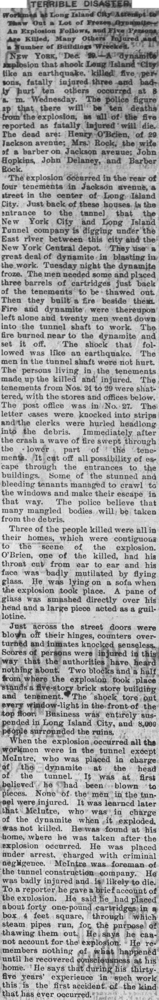

HN-292 · January 6, 1893 · Disasters, Accidents & Emergencies > Explosions, Industrial & Workplace Disasters > Explosives depots and munition blasts
Source: People's Pilot, p. 2, December 29 New York dispatch — original page.
Report: The late-December 1892 blast occurred beside tenements near a new East River tunnel project. The story at first alleged workers put frozen dynamite beside a fire, then quoted foreman McIntre claiming cartridges were placed in a steam-heated box; he could not remember the explosion. Five deaths were confirmed in the first account, with more feared. McIntre was said to be arrested on a criminal-negligence charge.
Assessment: Published in 1893 about an event in 1892, with conflicting thawing accounts and uncertain final fatalities. Arrest does not establish negligence in court. Follow-up open.
Authentic images retrieved from Hoosier State Chronicles (Indiana State Library). Article crops are located using the archive's own OCR word coordinates and rendered at native crop resolution; article clips are assembled from the archive's own article-block images; page images marked "archive tiles" are stitched from the archive's own tiled page service at its 256-px tile cap; page images marked "issue PDF" are single pages rasterised from the archive's own issue PDF, with the page chosen by matching the headline against the PDF's text layer; page scans are reduced-size access renditions. No images were generated, mocked, or retouched.

Status: Archive images acquired
Authentic archive-owned image renditions were retrieved for this record and are displayed above. The source-acquisition manifest preserves the original pre-acquisition feasibility assessment.
URL (preserved verbatim): https://newspapers.library.in.gov/?a=d&d=PLPL18930106.2.28
Saved research report: Historical_Newspaper_Event_Research_278-302_2026-10-22.md
Evidence note: A newspaper report means a historical publication made a claim; it does not establish that claim as fact. Contemporary reporting is separated from later scholarly context and our own assessment.